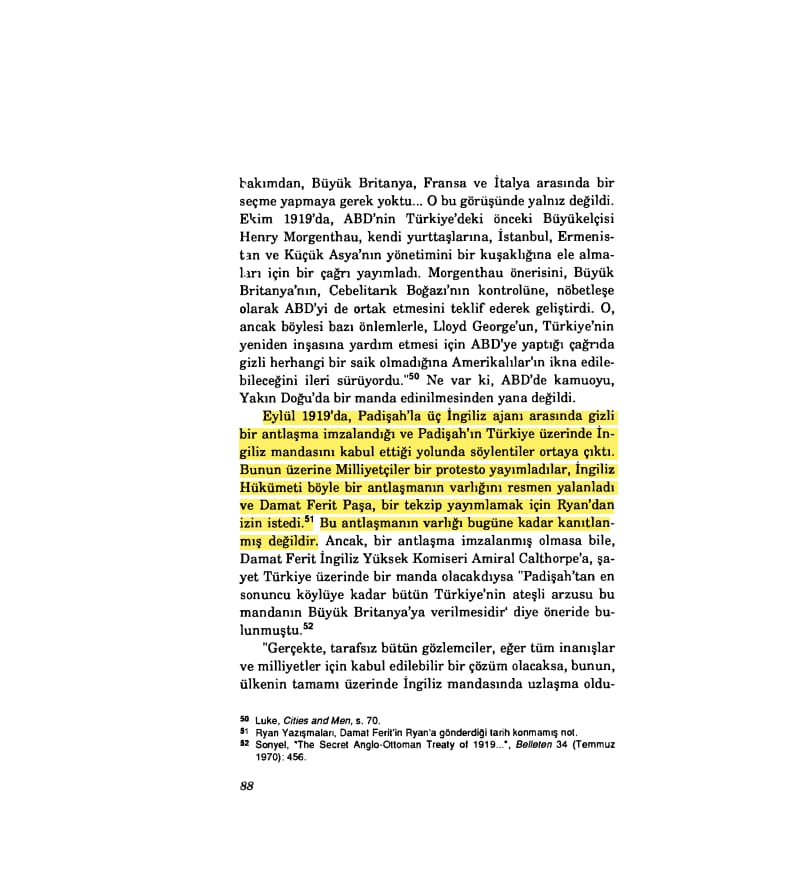
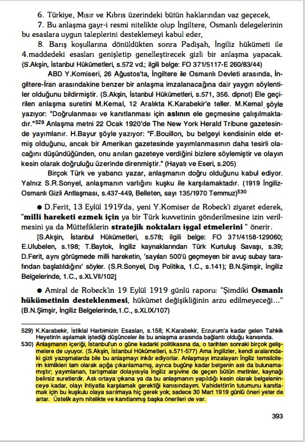
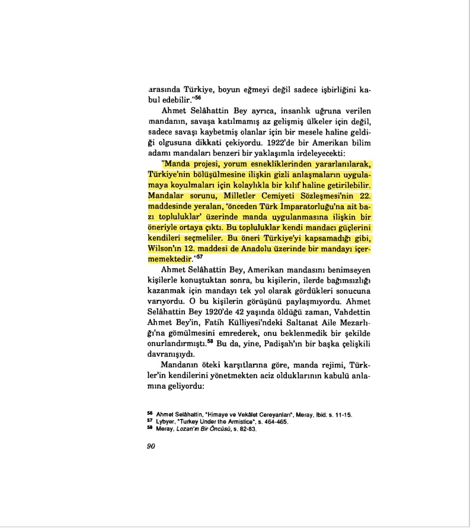
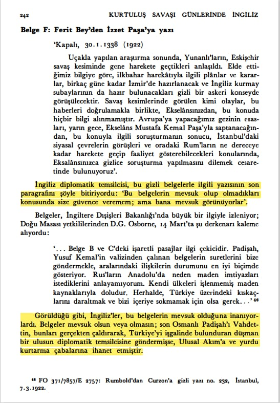
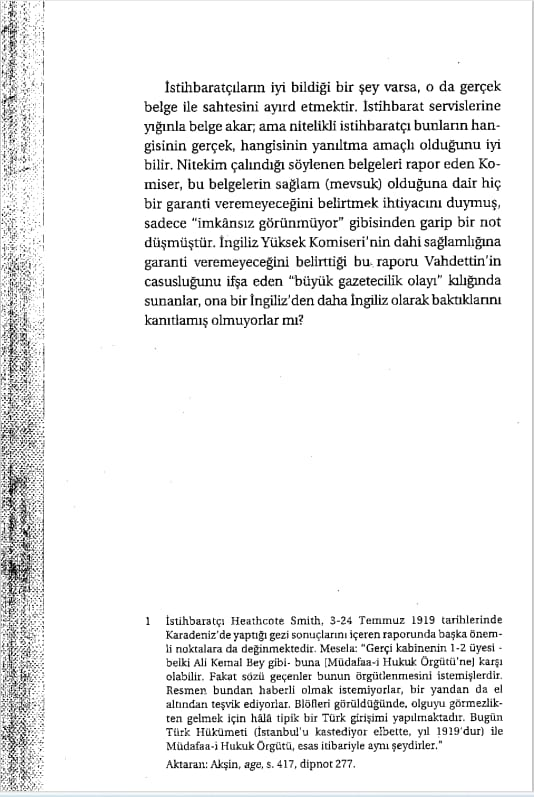
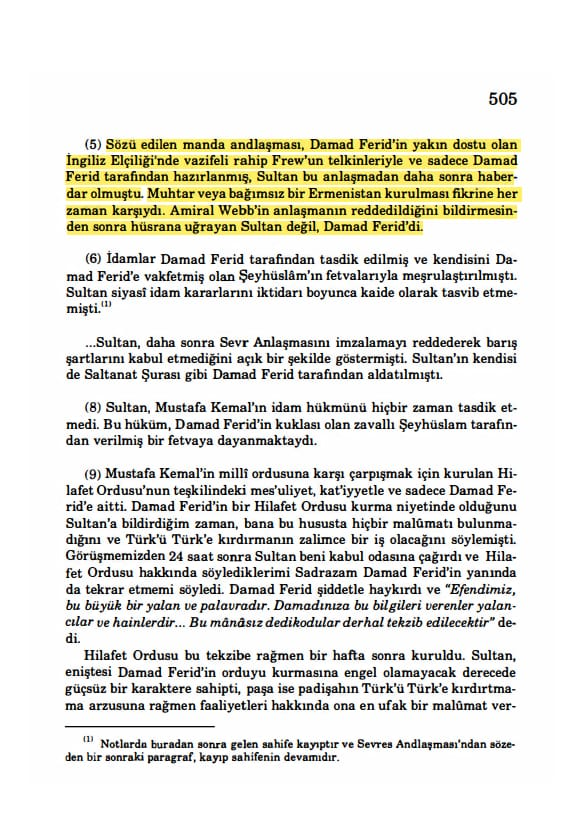
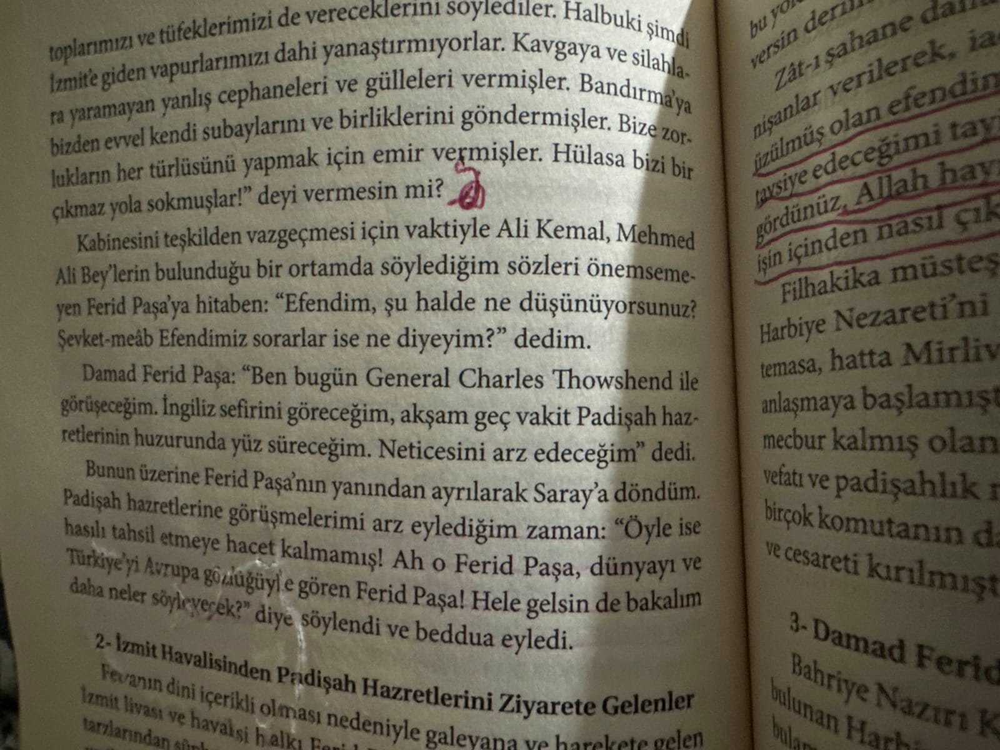

📚 Bilge Criss-İşgal Altında İstanbul 1918 -1923, s.88

📚 Turgut Özakman-Vahdettin, M. Kemal Ve Milli Mücadele, s.393

📚 Bilge Criss-İşgal Altında İstanbul 1918 -1923, s.90

Salahi Sonyelin Doğruluğu Meçhul Olan Belgeleri Vahideddin Aleyhinde Manipüle Çabası
📚 Salahi Sonyel, Kurtuluş Savaşı Günlerinde İngiliz İstihbarat Servisi, s.242

📚 Mustafa Armağan, Küller Altında yatan Tarih, s.165-166

📌 *İddia Edilen Manda Antlaşması Sultan Vahideddin değil Damat Feridin kendi başına yaptığı bir görüşmedir.*
📚 Murat Bardakçı, Şahbaba, s.505

📌 *Damat Feridin Sultandan Habersiz İngilizlerle Görüşmesi.*
📚 Osman Öndeş, Vahideddin’in Sırdaşı Avni Paşa Anlatıyor, s.236